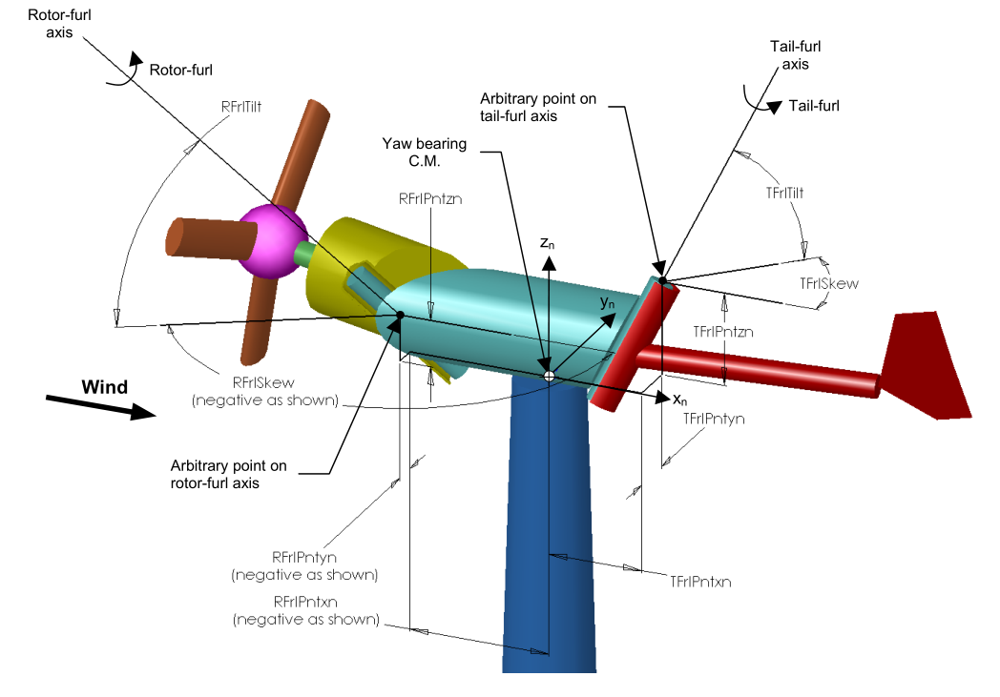
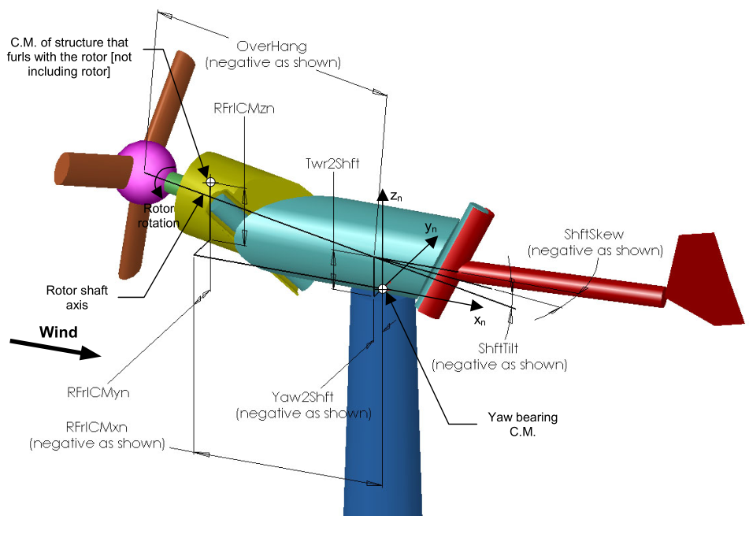
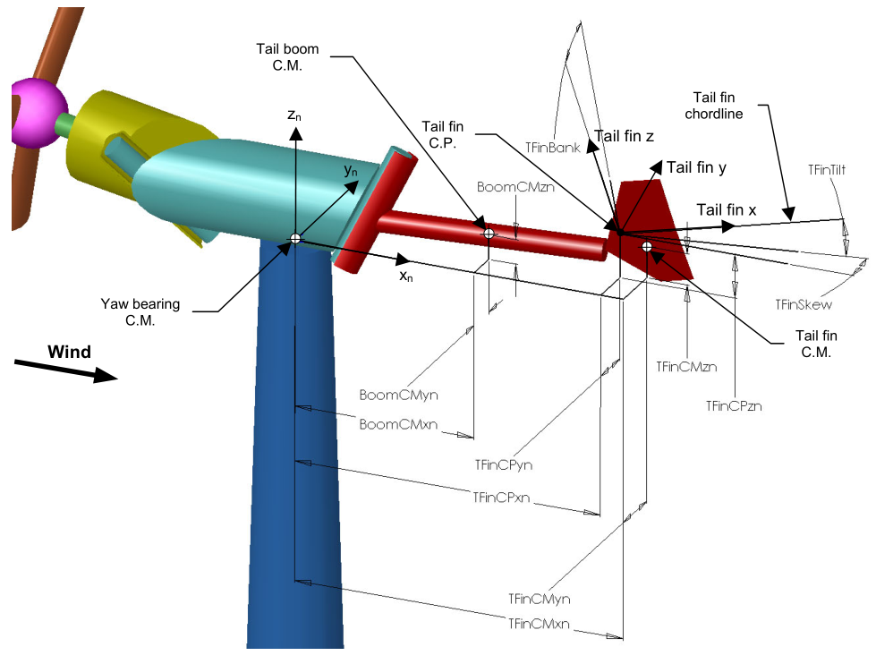

4.10.1. 좌표계
아래 하위 섹션에 자세히 설명되지 않은 좌표계에 대해서는 다음 참고 자료를 참조하세요.
OpenFAST_coords.pdf: OpenFAST의 일부 좌표계를 개요하는 2024년 프레젠테이션입니다.기술 보고서 FAST_AD 및 UAE 풍력 터빈 모델링(섹션 3)
FASTCoordinateSystems.doc: OpenFAST의 각 좌표계와 관련된 변환 행렬을 문서화합니다. 불행하게도 이 문서에는 이러한 좌표계를 나타내는 그림이 없습니다. 변환 행렬을 통해 시각화할 수 있기를 바랍니다.
4.10.1.1. 로터-펄(Rotor-Furl) 좌표계
로터 퍼럴 DOF를 사용하면 사용자는 로터와 구동계가 타워 꼭대기 구조물의 요잉 부분을 중심으로 회전할 수 있도록 하는 특이한 베어링 구성을 모델링할 수 있습니다. 로터-펄 DOF는 로터-펄 축이 로터 샤프트 축과 정렬된 경우 기어박스 장착의 비틀림 유연성을 모델링하는 데 대안으로 사용할 수 있습니다. 모델에 로터 펄링을 포함시키려면 사용자는 입력을 설정하여 터빈을 펄링 기계로 지정해야 합니다. Furling 기본 입력 파일에서 True로. 그런 다음 사용자는 Furling 입력 파일을 조립해야 하며, FurlFile, 이 기능을 활성화하려면 로터 퍼럴 플래그 RFrlDOF를 사용하십시오. 각도 로터-펄 운동은 입력에 의해 정의된 로터-펄 축을 중심으로 발생합니다.
RFrlPnt_n,
RFrlSkew, 및 RFrlTilt. FurlFile에서 사용할 수 있습니다. 입력 RFrlPnt_n 타워 상단을 기준으로 로터 펄 축에서 임의의 지점을 찾습니다. 입력 RFrlSkew
및 RFrlTilt 그런 다음 이 점을 통과하는 로터-펄 축의 각도 방향을 정의합니다. 보다 그림 4.46 회로도를 위해.
펄링-로터 어셈블리의 두 구성 요소인 허브와 로터-펄 구조 질량 중심의 형상은 그림과 같이 타워 상단을 기준으로 정의됩니다. 그림 4.47. 이 정의는 펄링 로터 어셈블리에서 좌표계를 정의할 필요가 없도록 선택되었습니다. 왜냐하면 이러한 좌표계는 모호한 방향을 가질 가능성이 높기 때문에 사용자가 이에 관련된 구성 정보를 입력하기 어렵게 만들기 때문입니다. 또한 이 정의는 로터-펄 어셈블리가 나셀과 별도로 존재하는지 여부에 따라(터빈에 로터-펄이 존재하는지 여부에 따라) 형상을 다르게 정의해야 하는 것과 관련된 복잡성을 방지합니다.
펄링-로터 어셈블리의 구성 요소 형상은 타워 상단을 기준으로 정의되므로 이 형상은 로터-펄 각도에 따라 자연스럽게 변경됩니다. 서로 다른 로터-펄 위치(예: 초기 로터-펄 각도의 변화)에 대해 서로 다른 형상을 정의해야 하는 것을 피하기 위해 ElastoDyn는 펄링-로터 어셈블리의 구성 요소 형상이 로터-펄 각도 0에서 정의/입력될 것으로 예상합니다. 따라서 초기 로터-펄 각도는 다른 로터-펄 형상의 사양에 영향을 미치지 않습니다. 다르게 말하면, 로터-펄 어셈블리 구성 요소의 입력 형상은 초기 로터-펄 위치에 관계없이 로터-펄 각도가 0일 때 로터 구성을 정의합니다. 사용자는 Furling 입력 파일을 조합할 때 이 규칙을 명확히 해야 합니다.
4.10.1.2. Tail-Furl 좌표계
tail-furl DOF를 사용하면 사용자는 타워 꼭대기 구조물의 요잉 부분을 중심으로 꼬리가 회전하도록 허용하는 베어링의 특이한 구성을 모델링할 수 있습니다. 모델에 테일 펄링을 포함시키려면 사용자는 입력을 설정하여 터빈을 펄링 기계로 지정해야 합니다. Furling ElastoDyn 입력 파일을 True로 변경합니다. 그런 다음 Furling 입력 파일을 어셈블해야 합니다.
FurlFile, tail-furl 플래그를 사용합니다. TFrlDOF, 이 기능을 활성화합니다. 각진 tail-furl 동작은 입력에 의해 정의된 tail-furl 축을 중심으로 발생합니다. TFrlPnt_n, TFrlSkew, 및 TFrlTilt 에서 사용 가능
FurlFile. 입력 TFrlPnt_n 타워 꼭대기를 기준으로 꼬리털 축에서 임의의 지점을 찾습니다. 보다 그림 4.46 회로도를 위해.
펄링-테일 어셈블리의 모든 구성 요소인 테일 붐 질량 중심, 테일 핀 질량 중심 및 테일 핀 공기 역학적 표면의 형상은 그림과 같이 타워 상단을 기준으로 정의됩니다. 그림 4.48. 이 정의는 Furling-tail 어셈블리에서 좌표계를 정의할 필요가 없도록 선택되었습니다. 왜냐하면 이러한 좌표계는 모호한 방향을 가질 가능성이 높기 때문에 사용자가 이와 관련된 구성 정보를 입력하기 어렵게 만들기 때문입니다. 이 정의는 또한 테일 퍼 어셈블리가 나셀과 별도로 존재하는지 여부에 따라 형상을 다르게 정의해야 하는 것과 관련된 복잡성을 방지하며, 이는 테일 퍼가 터빈에 존재하는지 여부에 따라 달라집니다.
Furling-tail 어셈블리의 구성 요소 형상은 타워 상단을 기준으로 정의되므로 이 형상은 tail-furl 각도에 따라 자연스럽게 변경됩니다. 서로 다른 꼬리 퍼럴 위치에 대해 서로 다른 형상을 정의해야 하는 것을 피하기 위해(예: 초기 테일 퍼럴 각도의 변형) ElastoDyn는 퍼링 테일 어셈블리의 구성 요소 기하학적 구조가 테일 퍼럴 각도 0에서 정의/입력될 것으로 예상합니다. 따라서 초기 꼬리털 각도는 다른 꼬리털 형상의 사양에 영향을 주지 않습니다. 다르게 말하면, 꼬리털 조립 구성요소의 입력 형상은 초기 꼬리털 위치에 관계없이 꼬리털 각도가 0일 때 꼬리 구성을 정의합니다. 사용자는 Furling 입력 파일을 조합할 때 이 규칙을 명확히 해야 합니다. 이 Furling 기하학 규칙에 대한 추가 설명은 위의 Rotor-Furl 섹션에서 제공됩니다.


그림 4.46 3개의 블레이드, 역풍, 펄링 터빈의 레이아웃: 펄 축


그림 4.47 3엽 날개, 풍향, 펄링 터빈의 레이아웃: 로터-펄 구조


그림 4.48 3개의 블레이드, 역풍, 퍼링 터빈의 레이아웃: 테일 퍼럴 구조. NOTE: 꼬리 날개 "CP"(압력 중심) 매개변수가 이제 기준점 위치로 대체됩니다.